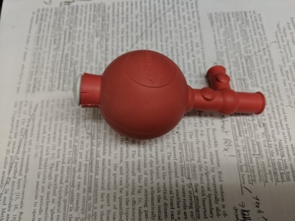

$2 microfluidic pumps made of latex balloons and stockings

Generally, microfluidic systems require an external pump system to operate. Self-sufficient microfluidic systems are microfluidic systems that have all the components they need on the microfluidic device itself. This is a key concept in lab on a chip designs (the devices from whence this website puns its name).
A paper from Peter Thurgood, Sergio Suarez, Sheng Chen, Christopher Gilliam, Elena Pirogova, Aaron Jex, Sara Baratchid and Khashayar Khoshmanesh details how to make a pump for a microfluidic device using a latex balloon and stockings. This is a follow up to a previous paper in which they demonstrated a weaker pump with just the latex balloon.
The overall cost of the reinforced balloon pumping system is a whopping ∼$2, comprising of $0.2 for the balloon, $1 for each pair of stockings, $0.1 for the PVC tubing, $0.5 for the optional 2-way valve and $0.2 for the syringe. Three layers of stockings get the device up to 25 kPa,
Not only is it an incredibly cheap portable and simple device, but its contact-free. That means there is no damage to the sample from the mechanical stress imposed by the pump, or fouling of the pump. It's essentially a terrific version of the best thing in any lab: a pipette bulb

We love the idea, and if you've tried this on a real application we'd be happy to listen to and share your experiences good or bad.